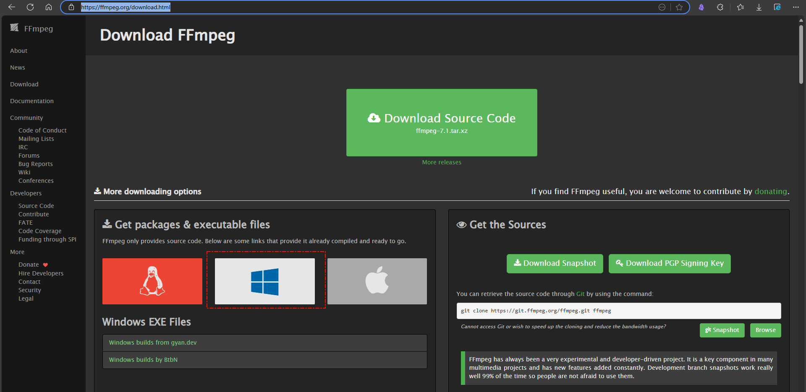

[TOC]{float}
音视频转录文字+LLM总结+RAG+工作流自动化
- Win10 8G 显存GPU
- 为什么使用md格式，了解到向量模型在分段切割时，是对md格式比较友好的，如果是纯txt或者word、PDF格式的文档，切割、分段（块）的效果不好
- 最终目标，尝试用Dify或其他工具建立工作流，自动化处理音视频转录文字+AI总结+生成文档+保存RAG知识库全套流程
目标
视频资料的文本提取->AI总结>知识入库
对以上进行工作流自动化配置，输入文件—》最终将核心内容输入知识库（md格式）分块处理，chat问答验证
- OpenAI的whisper开源项目，FFmpge
- Ollama本地大模型总结/在线大模型API
- 工作流—借助Dify或其他工具
Whisper部署
前置要安装FFmpeg，N卡走GPU需要装CUDA和PyTorch
FFmpeg安装
下载安装
选择对应的系统，比如Windows安装，选择其中一个链接，以Whindow builds by BtbN为例，进入后是Github项目的releases页面；
下载适合本机的Windows后找目录解压即可使用

配置环境变量
配置好环境变量方便使用，把bin目录的绝对路径，添加到系统变量的Path里

测试验证
检查环境变量配置是否正常，ffmpeg命令有输出说明配置正常，无输出返回上一步检查，bin后有无带\之类的。

NVIDIA CUDA工具包
如果是N卡可以支持GPU方式跑Whisper，需要安装它的CUDA开发工具包
- 先检查显卡信息，确认支持CUDA

- 然后去官网安装CUDA开发者工具包，去官网下载安装，CUDA Toolkit 12.8 Downloads | NVIDIA Developer 选择适合系统的以及安装方式，安装方式—> local本地安装要下载整个包比较大，network是通过网络安装下载到本地的包小。

- 下载完毕后进行安装，然后在命令行输入
nvcc --version查看是否正常安装了。 有坑，要选择自定义安装，指定装CUDA工具包的路径，不然开始指定的是不对CUDA组件这些生效的还是会被装到C盘去

安装完毕

命令行检查

Whisper安装
信息
官网Introducing Whisper | OpenAI
Github地址https://github.com/openai/whisper.git
Hugging Face Space在线演示-Whisper
麦克风，音频文件，Youtube视频地址三种方式的演示环境

模型表
主要看RAM这里，最多尝试到medium和turbo这里

安装使用
按照Github项目说明pip安装
|
|
太慢了就更换国内源
|
|
安装完毕即可使用，但是发现是跑的CPU
whisper –help 命令查看帮助
比如下面这条 指定model 类型为small
|
|
默认走的是CPU，转录的很慢，要走GPU还需要安装CUDA对应版本的Pytouch
|
|
- 如果使用的模型第一次使用会先下载模型到本地

需PyTorch才能跑GPU
安装PyTorch
到官网Start Locally | PyTorch选择安装对应CUDA版本的版本，官网CUDA目前到126

|
|
太慢了，用国内源尝试，还是慢。。。
|
|

最终安装成功
注意安装之后是默认走CUDA，走GPU转录
如果要走CPU ，命令加上-- device cpu，CPU时可以加--threads 8指定线程数
测试验证
进入python，用以下命令测试，查看是否正常安装
|
|

Whisper+GPU测试
音频测试
1whisper test.m4a --model medium --language Chinese --model_dir L:\Whisper
如果不是N卡或者显存不够，可以用CPU跑，速度会慢很多。 用GPU的话速度会快一些，不过8G的GPU实测最多也就跑到medium的模型，因为Pytorch会占用内存

清理了之后，勉强跑起来了，实测效果会比small的模型要好一些，不过也好的不多，见下图
-
这是medium的

-
这是small的

视频测试
|
|

看着是正常能直接透过FFmpeg去解析MP4文件的，默认生成所有格式的，如果只想生成某种格式的文件可以–output_format命令指定，格式如下
|
|
LLM总结内容
实测Kimi的文章总结能力要比豆包强一些

DeepSeek R1的结果也比较，而且DeepSeek可以识别tsv格式文件

GUI工具
做UI界面工具验证接口和相关功能；简化功能验证操作，半自动化，为后续全自动工作流做基础工作。
- 转录部分效果

- AI处理部分

工作流
目前已经完成用GUI界面（代码）验证：音视频转录为文本文件 —> 再用LLM的API接口处理文本文件内容流程
下一步进行工作流的验证，还在学习中